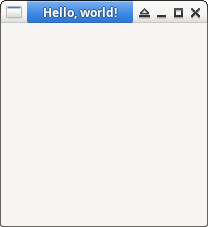

參考資訊：
https://docs.gtk.org/gtk3/getting_started.html
main.cpp
#include <gtk/gtk.h>
static void activate(GtkApplication *app, gpointer user_data)
{
GtkWidget *win = NULL;
win = gtk_application_window_new(app);
gtk_window_set_title(GTK_WINDOW(win), "Hello, world!");
gtk_widget_show_all(win);
}
int main(int argc, char **argv)
{
GtkApplication *app = NULL;
app = gtk_application_new(NULL, G_APPLICATION_DEFAULT_FLAGS);
g_signal_connect(app, "activate", G_CALLBACK(activate), NULL);
g_application_run(G_APPLICATION(app), argc, argv);
g_object_unref(app);
return 0;
}
編譯、執行
$ gcc $(pkg-config --cflags gtk+-3.0) -o main main.c $(pkg-config --libs gtk+-3.0) $ ./main
